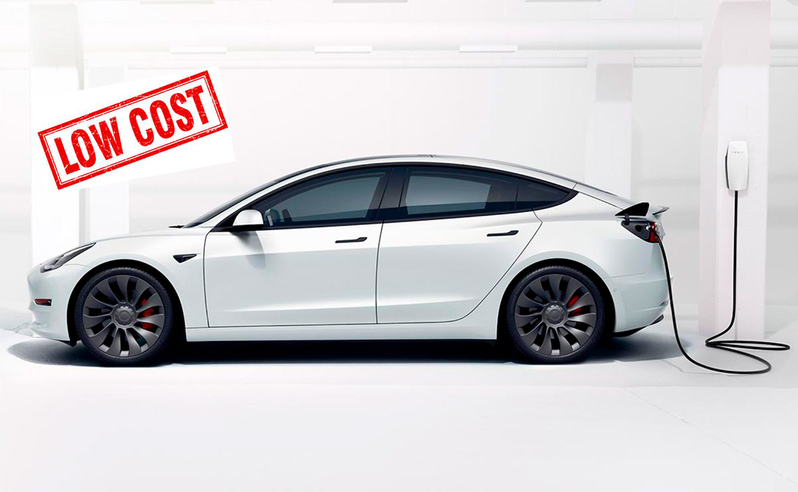
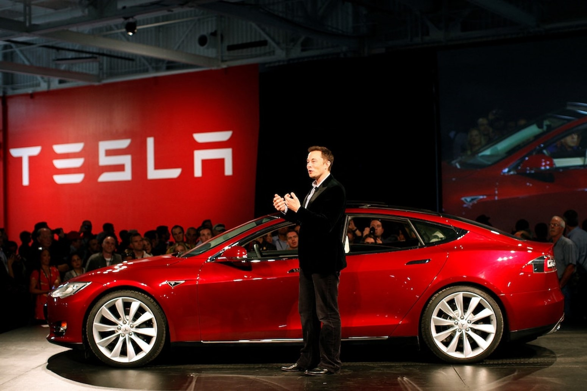
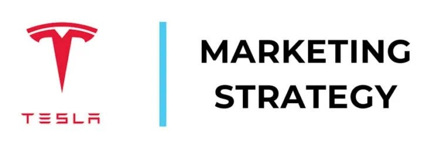

Tesla ofrecerá un modelo de auto eléctrico de bajo costo para enfrentar la fuerte competencia china

En 2025 se lanzará un modelo más económico de Tesla, según declaró a los inversionistas su CEO, Elon
Musk. Esto ayudaría al fabricante de vehículos eléctricos a competir con BYD y otras empresas chinas en
expansión.
Leer más...
¿Cómo se convirtió Tesla en la Empresa Más Innovadora del Mundo?

Desde sus inicios, Tesla se ha caracterizado por su fuerte cultura empresarial centrada en la innovación. Esta cultura está profundamente arraigada a la marca, y la distingue de sus competidores en la industria. Incluso competidores de primer nivel con muchísimos años más en el mercado están teniendo serios problemas en seguir el ritmo de los avances de Tesla.
Leer más...
Marketing de Tesla: descubre cómo la marca está revolucionando el mercado automovilístico

Tesla Motors se ha destacado como una de las principales automotrices de coches eléctricos. Para ser cada vez más significativa en el mercado automovilístico, la empresa utiliza diversas estrategias de marketing que hacen toda la diferencia.
Leer más...